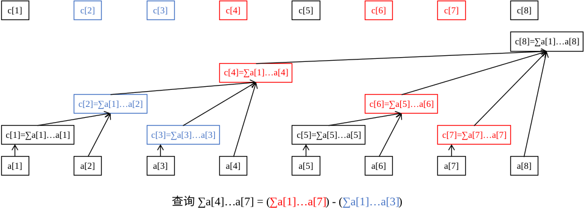

Cây Fenwick (Binary Indexed Tree)
Giới thiệu
Mảng Fenwick (Cây Chỉ mục Nhị phân - Binary Indexed Tree - BIT) là một cấu trúc dữ liệu hỗ trợ cập nhật điểm đơn và truy vấn đoạn với độ dài code nhỏ.
Thế nào là "cập nhật điểm đơn" và "truy vấn đoạn"?
Giả sử có bài toán sau:
Cho một dãy số \(a\), bạn cần thực hiện hai loại thao tác:
- Cho \(x, y\)，tăng \(a[x]\) thêm \(y\).
- Cho \(l, r\)，tính tổng \(a[l \ldots r]\).
Trong đó loại thao tác thứ nhất là "cập nhật điểm đơn", loại thứ hai là "truy vấn đoạn".
Tương tự, còn có: "cập nhật đoạn", "truy vấn điểm đơn". Ví dụ của chúng như sau:
- Cập nhật đoạn: Cho \(l, r, x\)，tăng mỗi số trong \(a[l \ldots r]\) thêm \(x\);
- Truy vấn điểm đơn: Cho \(x\)，tính giá trị \(a[x]\).
Lưu ý, bài toán đoạn thường mạnh hơn bài toán điểm đơn, vì thao tác trên điểm đơn tương đương với thao tác trên đoạn có độ dài \(1\).
Thông tin được duy trì bởi Mảng Fenwick thông thường và phép toán cần thỏa mãn tính kết hợp và có thể lấy hiệu (dùng phép toán ngược), ví dụ: phép cộng (tổng), phép nhân (tích), phép XOR, v.v.
- Tính kết hợp: \((x \circ y) \circ z = x \circ (y \circ z)\)，trong đó \(\circ\) là một toán tử hai ngôi.
- Có thể lấy hiệu (có phép toán ngược): Thỏa mãn có thể tìm ra \(y\) khi biết \(x \circ y\) và \(x\).
Cần lưu ý:
- Phép nhân modulo muốn có thể lấy hiệu, cần đảm bảo mỗi số đều có nghịch đảo (luôn tồn tại khi modulo là số nguyên tố);
- Ví dụ các thông tin như \(\gcd\), \(\max\) không thể lấy hiệu, nên không thể dùng Mảng Fenwick thông thường để xử lý, tuy nhiên:
- Sử dụng hai Mảng Fenwick có thể dùng để xử lý cực trị đoạn, xem Efficient Range Minimum Queries using Binary Indexed Trees.
- Trang này cũng sẽ giới thiệu một Mảng Fenwick mở rộng hỗ trợ thông tin không thể lấy hiệu, với độ phức tạp thời gian \(\Theta(\log^2n)\).
Trên thực tế, các bài toán mà Mảng Fenwick có thể giải được là tập con của các bài toán mà Đoạn Thẳng (Segment Tree) có thể giải được: những gì Mảng Fenwick làm được, Đoạn Thẳng chắc chắn làm được; những gì Đoạn Thẳng làm được, Mảng Fenwick chưa chắc làm được. Tuy nhiên, code của Mảng Fenwick ngắn hơn nhiều so với Đoạn Thẳng, và hằng số thời gian chạy thường nhỏ hơn, nên vẫn có giá trị học tập.
Đôi khi, với sự trợ giúp của mảng hiệu và mảng phụ trợ, Mảng Fenwick còn có thể giải quyết các bài toán mạnh hơn như cộng đoạn lấy giá trị điểm đơn và cộng đoạn lấy tổng đoạn.
Mảng Fenwick
Cảm nhận ban đầu
Hãy xem một ví dụ: ta muốn tính tổng tiền tố của \(a[1 \ldots 7]\), làm thế nào?
Một cách làm là: \(a_1 + a_2 + a_3 + a_4 + a_5 + a_6 + a_7\), cần tính tổng của \(7\) số.
Nhưng nếu đã biết ba số \(A\), \(B\), \(C\), trong đó \(A\) là tổng của \(a[1 \ldots 4]\)，\(B\) là tổng của \(a[5 \ldots 6]\)，\(C\) là tổng của \(a[7 \ldots 7]\) (thực ra chính là \(a\)). Bạn sẽ tính thế nào? Chắc chắn bạn sẽ trả lời: \(A + B + C\), chỉ cần tính tổng của \(3\) số.
Đây là lý do Mảng Fenwick có thể tính toán thông tin nhanh chóng: ta luôn có thể chia đoạn tiền tố \([1, n]\) thành không quá \(\boldsymbol{\log n}\) đoạn con, sao cho thông tin của \(\log n\) đoạn con này là đã biết.
Vì vậy, ta chỉ cần hợp nhất thông tin của \(\log n\) đoạn con này là có được kết quả. So với việc hợp nhất \(n\) thông tin ban đầu, hiệu suất đã được cải thiện rất nhiều.
Không khó để nhận ra thông tin phải thỏa mãn tính kết hợp, nếu không thì không thể hợp nhất như trên được.
Hình ảnh dưới đây minh họa nguyên lý hoạt động của Mảng Fenwick:
Tám ô vuông dưới cùng đại diện cho mảng dữ liệu gốc \(a\). Các ô vuông không đều nhau phía trên (cùng một mảng với tám ô vuông trên cùng) đại diện cho mảng cấp cao hơn của mảng \(a\) — mảng \(c\).
Mảng \(c\) dùng để lưu trữ tổng thông tin của một đoạn nào đó của mảng gốc \(a\). Tức là thông tin của các đoạn này đã biết, mục tiêu của chúng ta là chia truy vấn tiền tố thành các đoạn nhỏ này.
Ví dụ, từ hình ảnh có thể thấy:
- \(c_2\) quản lý \(a[1 \ldots 2]\);
- \(c_4\) quản lý \(a[1 \ldots 4]\);
- \(c_6\) quản lý \(a[5 \ldots 6]\);
- \(c_8\) quản lý \(a[1 \ldots 8]\);
- Các \(c[x]\) còn lại quản lý chính phần tử \(a[x]\) (có thể coi là đoạn con độ dài \(1\) là \(a[x \ldots x]\)).
Không khó để nhận ra, \(c[x]\) quản lý một đoạn có biên phải là \(x\). Ta tạm thời không quan tâm đến biên trái, hãy cảm nhận cách Mảng Fenwick truy vấn.
Ví dụ: Tính tổng \(a[1 \ldots 7]\).
Quá trình: Bắt đầu từ \(c_{7}\), lùi lại, thấy \(c_{7}\) chỉ quản lý phần tử \(a_{7}\); sau đó tìm \(c_{6}\), thấy \(c_{6}\) quản lý tổng \(a[5 \ldots 6]\), sau đó nhảy đến \(c_{4}\), thấy \(c_{4}\) quản lý các phần tử \(a[1 \ldots 4]\), sau đó cố gắng nhảy đến \(c_0\), nhưng thực tế \(c_0\) không tồn tại, không nhảy nữa.
Các \(c\) mà ta vừa tìm được là \(c_7, c_6, c_4\), thực ra đây chính là ba đoạn con mà \(a[1 \ldots 7]\) được chia thành. Hợp nhất để được kết quả là \(c_7 + c_6 + c_4\).
Ví dụ: Tính tổng \(a[4 \ldots 7]\).
Ta vẫn bắt đầu từ \(c_7\) và nhảy đến \(c_6\) rồi nhảy đến \(c_4\). Lúc này ta thấy nó quản lý tổng \(a[1 \ldots 4]\), nhưng ta không muốn phần \(a[1 \ldots 3]\), vậy làm sao? Rất đơn giản, trừ đi tổng của \(a[1 \ldots 3]\) là được.
Vậy hãy xem xét ngay từ đầu, chuyển việc truy vấn \(a[4 \ldots 7]\) thành truy vấn \(a[1 \ldots 7]\) và truy vấn \(a[1 \ldots 3]\), cuối cùng lấy hai kết quả trừ đi cho nhau.

Đoạn quản lý
Vậy vấn đề đặt ra là: Đoạn mà \(c[x] (x \ge 1)\) quản lý thực sự kéo dài sang trái bao nhiêu? Tức là độ dài đoạn là bao nhiêu?
Trong Mảng Fenwick, quy định độ dài đoạn mà \(c[x]\) quản lý là \(2^{k}\), trong đó:
- Đặt vị trí bit thấp nhất là bit thứ \(0\), thì \(k\) chính xác là vị trí của bit
1thấp nhất trong biểu diễn nhị phân của \(x\); - \(2^k\) (độ dài đoạn quản lý của \(c[x]\)) chính xác là số tạo thành từ bit
1thấp nhất của \(x\) và tất cả các bit0theo sau nó.
Ví dụ, \(c_{88}\) quản lý đoạn nào?
Vì \(88_{(10)}=01011000_{(2)}\), bit 1 thấp nhất và các bit 0 theo sau nó tạo thành là 1000, tức là \(8\), nên \(c_{88}\) quản lý \(8\) phần tử của mảng \(a\).
Do đó, \(c_{88}\) đại diện cho thông tin đoạn \(a[81 \ldots 88]\).
Ta ký hiệu số tạo thành từ bit 1 thấp nhất của \(x\) và các bit 0 theo sau là \(\operatorname{lowbit}(x)\), thì đoạn mà \(c[x]\) quản lý là \([x-\operatorname{lowbit}(x)+1, x]\).
Chú ý
\(\operatorname{lowbit}\) không phải là vị trí \(k\) của bit 1 thấp nhất, mà là \(2^k\) được tạo thành từ bit 1 này và tất cả các bit 0 theo sau nó.
Làm thế nào để tính lowbit? Theo kiến thức về phép toán bit, ta có thể tính được lowbit(x) = x & -x.
Nguyên lý của lowbit
Lấy toàn bộ các bit của x đảo ngược, sau đó cộng thêm \(1\), ta có thể nhận được mã nhị phân của -x. Ví dụ: mã nhị phân của \(6\) là 110, đảo ngược toàn bộ là 001, cộng 1 được 010.
Giả sử mã nhị phân của x ban đầu là (...)10...00, đảo ngược toàn bộ là [...]01...11, cộng 1 được [...]10...00, đây chính là mã nhị phân của -x. Trong đó, các dấu (...) và [...] có các bit tương ứng ngược nhau, nên x & -x = (...)10...00 & [...]10...00 = 10...00, kết quả nhận được chính là lowbit.
Thực hiện
1 2 3 4 5 6 7 8 | |
1 2 3 4 5 6 7 8 9 | |
Truy vấn đoạn
Tiếp theo, ta xem xét cài đặt cụ thể các thao tác của Mảng Fenwick, trước hết là truy vấn đoạn.
Nhắc lại quá trình truy vấn \(a[4 \ldots 7]\), ta chuyển nó thành hai quá trình con: truy vấn tổng \(a[1 \ldots 7]\) và truy vấn tổng \(a[1 \ldots 3]\), sau đó lấy hiệu.
Thực tế, bất kỳ truy vấn đoạn nào cũng có thể làm như vậy: truy vấn tổng \(a[l \ldots r]\) chính là tổng \(a[1 \ldots r]\) trừ đi tổng \(a[1 \ldots l - 1]\), từ đó chuyển bài toán đoạn thành bài toán tiền tố, thuận tiện xử lý hơn.
Thực tế, việc chuyển đổi truy vấn đoạn \(a[l \ldots r]\) thành truy vấn tiền tố \(a[1 \ldots r]\) và \(a[1 \ldots l - 1]\) rồi lấy hiệu là một kỹ thuật rất thường dùng trong thi đấu.
Vậy truy vấn tiền tố làm thế nào? Nhắc lại quá trình truy vấn \(a[1 \ldots 7]\):
Bắt đầu từ \(c_{7}\), lùi lại, thấy \(c_{7}\) chỉ quản lý phần tử \(a_{7}\); sau đó tìm \(c_{6}\), thấy \(c_{6}\) quản lý tổng \(a[5 \ldots 6]\), sau đó nhảy đến \(c_{4}\), thấy \(c_{4}\) quản lý các phần tử \(a[1 \ldots 4]\), sau đó cố gắng nhảy đến \(c_0\), nhưng thực tế \(c_0\) không tồn tại, không nhảy nữa.
Các \(c\) mà ta vừa tìm được là \(c_7, c_6, c_4\), thực ra đây chính là ba đoạn con mà \(a[1 \ldots 7]\) được chia thành. Hợp nhất để được kết quả là \(c_7 + c_6 + c_4\).
Quan sát quá trình trên, mỗi lần lùi lại là nhảy đến vị trí trước điểm trái của đoạn hiện tại làm điểm phải của đoạn mới, như vậy mới có thể chia tiền tố thành các đoạn không trùng lặp không thiếu. Ví dụ, \(c_6\) quản lý \(a[5 \ldots 6]\), lần tiếp theo sẽ nhảy đến \(5 - 1 = 4\), tức là truy cập \(c_4\).
Ta có thể viết ra quá trình truy vấn \(a[1 \ldots x]\):
- Bắt đầu từ \(c[x]\), lùi lại, \(c[x]\) quản lý \(a[x-\operatorname{lowbit}(x)+1 \ldots x]\);
- Đặt \(x \gets x - \operatorname{lowbit}(x)\)，nếu \(x = 0\) nghĩa là đã nhảy đến cuối, dừng vòng lặp; nếu không thì quay lại bước 1.
- Hợp nhất các \(c\) đã tìm được.
Khi cài đặt, ta không cần nhất thiết phải tìm hết tất cả \(c\) rồi mới hợp nhất, mà có thể vừa nhảy vừa hợp nhất.
Ví dụ ta cần duy trì thông tin là tổng, chỉ cần đặt \(\mathrm{ans} = 0\), sau đó mỗi lần nhảy đến \(c[x]\) thì \(\mathrm{ans} \gets \mathrm{ans} + c[x]\), cuối cùng \(\mathrm{ans}\) chính là kết quả hợp nhất.
Thực hiện
1 2 3 4 5 6 7 8 | |
1 2 3 4 5 6 | |
Tính chất của Mảng Fenwick và dạng cây của nó
Trước khi trình bày cập nhật điểm đơn, ta sẽ trình bày một số tính chất cơ bản của Mảng Fenwick, và nguồn gốc của dạng cây của nó, điều này sẽ giúp hiểu rõ hơn việc cập nhật điểm đơn của Mảng Fenwick.
Ta quy ước:
- \(l(x) = x - \operatorname{lowbit}(x) + 1\). Tức là \(l(x)\) là điểm trái của phạm vi quản lý của \(c[x]\).
- Đối với mọi số nguyên dương \(x\), luôn có thể biểu diễn \(x\) dưới dạng \(s \times 2^{k + 1} + 2^k\), trong đó \(\operatorname{lowbit}(x) = 2^k\).
- Trong " \(c[x]\) và \(c[y]\) không giao" dưới đây nghĩa là phạm vi quản lý của \(c[x]\) và \(c[y]\) không giao nhau, tức là \([l(x), x]\) và \([l(y), y]\) không giao nhau. " \(c[x]\) chứa trong \(c[y]\)" và các phát biểu tương tự cũng vậy.
Tính chất \(\boldsymbol{1}\)：Đối với \(\boldsymbol{x \le y}\)，hoặc là \(c[x]\) và \(c[y]\) không giao nhau, hoặc là \(c[x]\) chứa trong \(c[y]\).
Chứng minh
Chứng minh: Giả sử \(c[x]\) và \(c[y]\) giao nhau, tức là \([l(x), x]\) và \([l(y), y]\) giao nhau, thì nhất định có \(l(y) \le x \le y\).
Biểu diễn \(y\) dưới dạng \(s \times 2^{k +1} + 2^k\), thì \(l(y) = s \times 2^{k + 1} + 1\). Do đó, \(x\) có thể biểu diễn dưới dạng \(s \times 2^{k +1} + b\), trong đó \(1 \le b \le 2^k\).
Không khó để nhận ra \(\operatorname{lowbit}(x) = \operatorname{lowbit}(b)\). Vì \(b - \operatorname{lowbit}(b) \ge 0\),
nên \(l(x) = x - \operatorname{lowbit}(x) + 1 = s \times 2^{k +1} + b - \operatorname{lowbit}(b) +1 \ge s \times 2^{k +1} + 1 = l(y)\), tức là \(l(y) \le l(x) \le x \le y\).
Vì vậy, nếu \(c[x]\) và \(c[y]\) giao nhau, thì phạm vi quản lý của \(c[x]\) chắc chắn hoàn toàn chứa trong \(c[y]\).
Tính chất \(\boldsymbol{2}\)：\(c[x]\) chứa thực sự trong \(c[x + \operatorname{lowbit}(x)]\).
Chứng minh
Chứng minh: Đặt \(y = x + \operatorname{lowbit}(x)\)，\(x = s \times 2^{k + 1} + 2^k\), thì \(y = (s + 1) \times 2^{k +1}\)，\(l(x) = s \times 2^{k + 1} + 1\).
Không khó để nhận ra \(\operatorname{lowbit}(y) \ge 2^{k + 1}\), nên \(l(y) = (s + 1) \times 2^{k + 1} - \operatorname{lowbit}(y) + 1 \le s \times 2^{k +1} + 1= l(x)\), tức là \(l(y) \le l(x) \le x < y\).
Vì vậy, \(c[x]\) chứa thực sự trong \(c[x + \operatorname{lowbit}(x)]\).
Tính chất \(3\)：Đối với bất kỳ \(\boldsymbol{x < y < x + \operatorname{lowbit}(x)}\)，có \(c[x]\) và \(c[y]\) không giao nhau.
Chứng minh
Chứng minh: Đặt \(x = s \times 2^{k + 1} + 2^k\), thì \(y = x + b = s \times 2^{k + 1} + 2^k + b\), trong đó \(1 \le b < 2^k\).
Không khó để nhận ra \(\operatorname{lowbit}(y) = \operatorname{lowbit}(b)\). Vì \(b - \operatorname{lowbit}(b) \ge 0\),
do đó \(l(y) = y - \operatorname{lowbit}(y) + 1 = x + b - \operatorname{lowbit}(b) + 1 > x\), tức là \(l(x) \le x < l(y) \le y\).
Vì vậy, \(c[x]\) và \(c[y]\) không giao nhau.
Với sự chuẩn bị của ba tính chất này, ta tiếp tục xem xét dạng cây của Mảng Fenwick (bỏ qua các cạnh nối từ \(a\) đến \(c\)).
Thực tế, dạng cây của Mảng Fenwick là đồ thị tạo thành bằng cách nối \(x\) đến \(x + \operatorname{lowbit}(x)\), trong đó \(x + \operatorname{lowbit}(x)\) là cha của \(x\).
Lưu ý, khi xem xét dạng cây của Mảng Fenwick, ta không xét đến ảnh hưởng của kích thước Mảng Fenwick, tức là ta coi đây là một cây vô hạn, tiện cho việc phân tích. Trong cài đặt thực tế, ta chỉ cần dùng \(c[x]\) với \(x \le n\), trong đó \(n\) là độ dài mảng gốc.
Cây này tự nhiên thỏa mãn nhiều tính chất tốt, dưới đây liệt kê một số (đặt \(fa[u]\) là cha trực tiếp của \(u\)):
- \(u < fa[u]\).
- \(u\) lớn hơn bất kỳ hậu duệ nào của \(u\), nhỏ hơn bất kỳ tổ tiên nào của \(u\).
- \(\operatorname{lowbit}\) của điểm \(u\) nhỏ hơn nghiêm ngặt \(\operatorname{lowbit}\) của \(fa[u]\).
Chứng minh
Đặt \(y = x + \operatorname{lowbit}(x)\)，\(x = s \times 2^{k + 1} + 2^k\), thì \(y = (s + 1) \times 2^{k +1}\), không khó để nhận ra \(\operatorname{lowbit}(y) \ge 2^{k + 1} > \operatorname{lowbit}(x)\), chứng minh xong.
- Chiều cao của điểm \(x\) là \(\log_2\operatorname{lowbit}(x)\), tức là số lượng bit
1thấp nhất của \(x\) trong biểu diễn nhị phân.
Định nghĩa chiều cao
Chiều cao \(h(x)\) của điểm \(x\) thỏa mãn: nếu \(x \bmod 2 = 1\), thì \(h(x) = 0\), ngược lại \(h(x) = \max(h(y)) + 1\), trong đó \(y\) đại diện cho tất cả các con của \(x\) (lúc này \(x\) ít nhất có một con là \(x - 1\)).
Nói cách khác, chiều cao của một điểm cao hơn chiều cao của con cao nhất của nó \(1\). Nếu một điểm không có con, chiều cao của nó là \(0\).
Ở đây đề cập đến khái niệm chiều cao, là để giải thích độ phức tạp sau này tiện hơn.
- \(c[u]\) chứa thực sự trong \(c[fa[u]]\) (Tính chất \(2\)).
- \(c[u]\) chứa thực sự trong \(c[v]\), trong đó \(v\) là bất kỳ tổ tiên nào của \(u\) (Quy nạp trên tính chất trước).
- \(c[u]\) chứa thực sự \(c[v]\), trong đó \(v\) là bất kỳ hậu duệ nào của \(u\) (Đảo ngược tính chất trên).
- Đối với bất kỳ \(v' > u\), nếu \(v'\) không phải là tổ tiên của \(u\), thì \(c[u]\) và \(c[v']\) không giao nhau.
Chứng minh
\(u\) và các tổ tiên của \(u\), chắc chắn tồn tại một điểm \(v\) sao cho \(v < v' < fa[v]\), theo Tính chất \(3\) có \(c[v']\) không giao với \(c[v]\), mà \(c[v]\) chứa \(c[u]\), do đó \(c[v']\) không giao với \(c[u]\).
- Đối với bất kỳ \(v > u\), chỉ khi \(v\) là tổ tiên của \(u\), thì \(c[u]\) chứa thực sự trong \(c[v]\) (Tổng hợp các tính chất trên). Đây là nguyên lý cốt lõi của cập nhật điểm đơn Mảng Fenwick.
- Đặt \(u = s \times 2^{k + 1} + 2^k\), thì số lượng con của nó là \(k = \log_2\operatorname{lowbit}(u)\), được đánh số là \(u - 2^t(0 \le t < k)\).
- Ví dụ: Giả sử \(k = 3\), số nhị phân của \(u\) là
...1000, thì \(u\) có ba con, số nhị phân được đánh số lần lượt là...0111、...0110、...0100.
- Ví dụ: Giả sử \(k = 3\), số nhị phân của \(u\) là
Chứng minh
Trong một số \(x\), việc trừ đi \(2^t\) sẽ làm bit thứ \(t\) bị đảo ngược, còn các bit thấp hơn vẫn giữ nguyên.
Xét con \(v\) của \(u\), có \(v + \operatorname{lowbit}(v) = u\), tức là \(v = u - 2^t\) và \(\operatorname{lowbit}(v) = 2^t\). Đặt \(u = s \times 2^{k + 1} + 2^k\).
Xét \(\boldsymbol{0 \le t < k}\): Bit thứ \(t\) và các bit sau nó của \(u\) đều là \(0\), nên bit thứ \(t\) của \(v = u - 2^t\) trở thành \(1\), các bit sau vẫn là \(0\), thỏa mãn \(\operatorname{lowbit}(v) = 2^t\).
Xét \(\boldsymbol{t = k}\): Thì \(v = u - 2^k\), bit thứ \(k\) của \(v\) trở thành \(0\), không thỏa mãn \(\operatorname{lowbit}(v) = 2^t\).
Xét \(\boldsymbol{t > k}\): Thì \(v = u - 2^t\), bit thứ \(k\) của \(v\) là \(1\), nên \(\operatorname{lowbit}(v) = 2^k\), không thỏa mãn \(\operatorname{lowbit}(v) = 2^t\).
- Các đoạn quản lý của tất cả con của \(u\) ghép lại vừa đủ tạo thành \([l(u), u - 1]\).
- Ví dụ: Giả sử \(k = 3\), số nhị phân của \(u\) là
...1000, thì \(u\) có ba con, số nhị phân được đánh số lần lượt là...0111、...0110、...0100. c[...0100]biểu diễna[...0001 ~ ...0100].c[...0110]biểu diễna[...0101 ~ ...0110].c[...0111]biểu diễna[...0111 ~ ...0111].- Không khó để nhận ra hợp của ba đoạn quản lý trên vừa vặn là
a[...0001 ~ ...0111], tức là \([l(u), u - 1]\).
- Ví dụ: Giả sử \(k = 3\), số nhị phân của \(u\) là
Chứng minh
Các con của \(u\) luôn có thể biểu diễn dưới dạng \(u - 2^t(0 \le t < k)\), không khó để nhận ra, \(t\) càng nhỏ, \(u - 2^t\) càng lớn, đoạn nó đại diện càng nằm bên phải. Ta đặt \(f(t) = u - 2^t\), thì \(f(k - 1), f(k - 2), \ldots, f(0)\) lần lượt tạo thành các con của \(u\) từ trái sang phải.
Không khó để nhận ra \(\operatorname{lowbit}(f(t)) = 2^t\), nên \(l(f(t)) = u - 2^t - 2^t + 1 = u - 2^{t + 1} + 1\).
Xét hai con liền kề \(f(t + 1)\) và \(f(t)\). Điểm phải của đoạn quản lý của con trước là \(f(t + 1) = u - 2^{t + 1}\), điểm trái của đoạn quản lý của con sau là \(l(f(t)) = u - 2^{t + 1} + 1\), vừa khít.
Xét con ngoài cùng bên trái \(f(k - 1)\), điểm trái quản lý của nó \(l(f(k - 1)) = u - 2^k + 1\) vừa bằng \(l(u)\).
Xét con ngoài cùng bên phải \(f(0)\), điểm phải quản lý của nó chính là \(u - 1\).
Do đó, các đoạn quản lý của những con này có thể ghép lại vừa đủ tạo thành \([l(u), u - 1]\).
Cập nhật điểm đơn
Bây giờ xét làm thế nào để cập nhật điểm đơn \(a[x]\).
Mục tiêu của ta là bảo trì mảng \(c\) một cách chính xác. Để đảm bảo hiệu suất, ta chỉ cần duyệt và sửa đổi tất cả \(c[y]\) quản lý \(a[x]\), vì các \(c\) khác hiển nhiên không thay đổi.
\(c[y]\) quản lý \(a[x]\) chắc chắn chứa \(c[x]\) (theo Tính chất \(1\)), nên \(y\) trong dạng cây Mảng Fenwick là tổ tiên của \(x\). Do đó, ta bắt đầu từ \(x\) và liên tục nhảy lên cha cho đến khi nhảy quá độ dài mảng gốc.
Đặt \(n\) là kích thước của \(a\), quá trình cập nhật điểm đơn \(a[x]\) có thể viết như sau:
- Đặt \(x' = x\).
- Cập nhật \(c[x']\).
- Đặt \(x' \gets x' + \operatorname{lowbit}(x')\)，nếu \(x' > n\) nghĩa là đã nhảy đến cuối, dừng vòng lặp; nếu không thì quay lại bước 2.
Loại thông tin được duy trì và loại thao tác cập nhật đoạn, quyết định cách sửa đổi \(c[x']\). Dưới đây là một vài ví dụ:
- Nếu \(c[x']\) duy trì tổng đoạn, loại thao tác là tăng \(a[x]\) thêm \(p\), thì cách sửa đổi là tăng tất cả \(c[x']\) thêm \(p\).
- Nếu \(c[x']\) duy trì tích đoạn, loại thao tác là nhân \(a[x]\) với \(p\), thì cách sửa đổi là nhân tất cả \(c[x']\) với \(p\).
Tuy nhiên, tính linh hoạt của cập nhật điểm đơn cho phép loại thao tác cập nhật và loại thông tin duy trì không nhất thiết phải cùng một loại, ví dụ, nếu \(c[x']\) duy trì tổng đoạn, thao tác cập nhật là gán \(a[x]\) bằng \(p\), có thể chuyển thành tăng \(a[x]\) thêm \(p - a[x]\). Nếu là nhân \(a[x]\) với \(p\), thì chuyển thành tăng \(a[x]\) thêm \(a[x] \times p - a[x]\).
Dưới đây lấy ví dụ duy trì tổng đoạn, cập nhật tăng điểm đơn:
Thực hiện
1 2 3 4 5 6 | |
1 2 3 4 | |
Xây dựng cây (Khởi tạo)
Tức là dựa trên dãy ban đầu, xây dựng Mảng Fenwick (tất cả \(c\) được tiền xử lý xong).
Nói chung, có thể trực tiếp chuyển thành \(n\) lần cập nhật điểm đơn, độ phức tạp thời gian \(\Theta(n \log n)\) (phân tích độ phức tạp ở phần sau).
Ví dụ: Cho dãy \(a = (5, 1, 4)\) yêu cầu xây dựng cây, trực tiếp coi như cập nhật điểm đơn cho \(a\) thêm \(5\), cho \(a\) thêm \(1\), cho \(a\) thêm \(4\).
Cũng có phương pháp xây dựng cây với độ phức tạp \(\Theta(n)\), xem phần Xây dựng cây \(\Theta(n)\) của trang này.
Phân tích độ phức tạp
Độ phức tạp không gian hiển nhiên là \(\Theta(n)\).
Độ phức tạp thời gian:
- Đối với thao tác truy vấn đoạn: Toàn bộ quá trình lặp \(x \gets x - \operatorname{lowbit}(x)\), có thể coi là quá trình chuyển tất cả các bit
1trong biểu diễn nhị phân của \(x\) thành \(0\), từ bit thấp đến bit cao. Số lượng đoạn được chia bằng số lượng bit1trong biểu diễn nhị phân của \(x\) (tức là \(\operatorname{popcount}(x)\)). Do đó, độ phức tạp của một lần truy vấn là \(\Theta(\log n)\); - Đối với thao tác cập nhật điểm đơn: Khi nhảy lên cha, chiều cao truy cập tăng nghiêm ngặt, và luôn có \(x \le n\). Vì chiều cao của điểm \(x\) là \(\log_2\operatorname{lowbit}(x)\), nên chiều cao nhảy tới không vượt quá \(\log_2n\), do đó số lượng \(c\) được truy cập là cấp \(\log n\). Vì vậy, độ phức tạp của một lần cập nhật điểm đơn là \(\Theta(\log n)\).
Cộng đoạn lấy tổng đoạn
Kiến thức cần thiết: Tổng tiền tố & Hiệu số.
Bài toán này có thể được giải bằng cách sử dụng hai Mảng Fenwick để duy trì mảng hiệu số.
Xét mảng hiệu số \(d\) của dãy \(a\), trong đó \(d[i] = a[i] - a[i - 1]\). Vì tổng tiền tố của mảng hiệu số chính là mảng gốc, nên \(a_i=\sum_{j=1}^i d_j\).
Tương tự, ta xét chuyển đổi truy vấn tổng đoạn thông qua hiệu số. Vậy xét truy vấn tổng \(a[1 \ldots r]\), tức là \(\sum_{i=1}^{r} a_i\), tiến hành suy diễn:
Quan sát biểu thức này, không khó để nhận ra mỗi \(d_j\) được cộng tổng cộng \(r - j + 1\) lần. Tiếp tục suy diễn:
\(\sum_{i=1}^r d_i\) không thể suy ra giá trị của \(\sum_{i=1}^r d_i \times i\), nên cần dùng hai Mảng Fenwick để lần lượt duy trì thông tin tổng của \(d_i\) và \(d_i \times i\).
Vậy cập nhật cộng đoạn như thế nào? Xét việc cộng \(x\) cho đoạn \(a[l \ldots r]\) mang lại ảnh hưởng gì cho \(d\).
Vì hiệu số là \(d[i] = a[i] - a[i - 1]\),
- \(a[l]\) tăng thêm \(v\) mà \(a[l - 1]\) không đổi, nên giá trị \(d[l]\) tăng thêm \(v\).
- \(a[r + 1]\) không đổi mà \(a[r]\) tăng thêm \(v\), nên giá trị \(d[r + 1]\) giảm đi \(v\).
- Đối với bất kỳ \(i\) nào khác \(l\) và \(r+1\), \(a[i]\) và \(a[i - 1]\) hoặc là đều không đổi, hoặc đều tăng thêm \(v\), \(a[i] + v - (a[i - 1] + v)\) vẫn là \(a[i] - a[i - 1]\), nên các \(d[i]\) khác đều không đổi.
Vậy không khó để nghĩ đến cách duy trì: đối với Mảng Fenwick duy trì \(d_i\), cập nhật điểm đơn cho \(l\) thêm \(v\), cho \(r + 1\) thêm \(-v\); đối với Mảng Fenwick duy trì \(d_i \times i\), cập nhật điểm đơn cho \(l\) thêm \(v \times l\), cho \(r + 1\) thêm \(-v \times (r + 1)\).
Còn bài toán yếu hơn, cộng đoạn lấy giá trị điểm đơn, chỉ cần dùng Mảng Fenwick duy trì một mảng hiệu số \(d_i\). Truy vấn giá trị điểm đơn \(a[x]\), chỉ cần tính tổng tiền tố của \(d[1 \ldots x]\) là đủ.
Dưới đây trình bày mã cho cộng đoạn lấy tổng đoạn:
Thực hiện
1 2 3 4 5 6 7 8 9 10 11 12 13 14 15 16 17 18 19 20 21 22 23 24 25 26 27 28 29 30 | |
1 2 3 4 5 6 7 8 9 10 11 12 13 14 15 16 17 18 19 20 21 22 23 24 25 26 27 28 29 30 31 32 33 34 35 36 | |
Dựa trên nguyên lý này, đáng lẽ có thể thực hiện "nhân đoạn lấy tích đoạn", "XOR đoạn với một số, lấy giá trị XOR đoạn", v.v., miễn là thông tin được duy trì và thao tác đoạn là cùng loại phép toán. Độc giả quan tâm có thể tự mình thử nghiệm.
Mảng Fenwick hai chiều
Cập nhật điểm đơn, truy vấn ma trận con (tiền tố)
Mảng Fenwick hai chiều, còn được gọi là Mảng Fenwick lồng trong Mảng Fenwick, dùng để duy trì cập nhật điểm đơn và thông tin tiền tố trên mảng hai chiều.
Tương tự như Mảng Fenwick một chiều, ta dùng \(c(x, y)\) để biểu diễn thông tin tổng hợp của ma trận \(a(x - \operatorname{lowbit}(x) + 1, y - \operatorname{lowbit}(y) + 1) \ldots a(x, y)\), tức là thông tin tổng hợp của một ma trận con có góc dưới phải là \(a(x, y)\), cao \(\operatorname{lowbit}(x)\), rộng \(\operatorname{lowbit}(y)\).
Đối với cập nhật điểm đơn, đặt:
Tức là \(f(x, i)\) là tổ tiên cấp thứ \(i\) của \(x\) trong dạng cây Mảng Fenwick (tổ tiên cấp \(0\) là chính nó).
Thì chỉ có các phần tử \(c(f(x, i), f(y, j))\) quản lý \(a(x, y)\), khi cập nhật \(a(x, y)\) chỉ cần cập nhật tất cả \(c(f(x, i), f(y, j))\), trong đó \(f(x, i) \le n\) và \(f(y, j) \le m\).
Chứng minh tính đúng đắn
\(c(p, q)\) quản lý \(a(x, y)\), tìm phạm vi giá trị của \(p\) và \(q\).
Xét một Mảng Fenwick một chiều \(c_1\) kích thước \(n\) (tương ứng với mảng gốc \(a_1\)) và một Mảng Fenwick một chiều \(c_2\) kích thước \(m\) (tương ứng với mảng gốc \(a_2\)).
Mệnh đề tương đương với: \(c_1(p)\) quản lý \(a_1[x]\) VÀ \(c_2(q)\) quản lý \(a_2[y]\).
Nghĩa là, trong dạng cây Mảng Fenwick, \(p\) là một điểm trong số \(x\) và các tổ tiên của nó, \(q\) là một điểm trong số \(y\) và các tổ tiên của nó.
Do đó, \(p = f(x, i)\) và \(q = f(y, j)\).
Đối với truy vấn, ta đặt:
Sau đó hợp nhất tất cả \(c(g(x, i), g(y, j))\), trong đó \(g(x, i), g(y, j) > 0\).
Chứng minh tính đúng đắn
Đặt \(\circ\) là toán tử hợp nhất hai thông tin (ví dụ, nếu thông tin là tổng đoạn, thì \(\circ = +\)).
Xét một Mảng Fenwick một chiều \(c_1\) với \(c_1[g(x, 0)] \circ c_1[g(x, 1)] \circ c_1[g(x, 2)] \circ \cdots\) chính xác biểu diễn thông tin đoạn \([1 \ldots x]\) trên mảng gốc.
Tương tự, đặt \(t(x) = c(x, g(y, 0)) \circ c(x, g(y, 1)) \circ c(x, g(y, 2)) \circ \cdots\), thì \(t(x)\) chính xác biểu diễn thông tin ma trận con \(a(x - \operatorname{lowbit}(x) + 1, 1) \ldots a(x, y)\).
Tương tự nữa, thì \(t(g(x, 0)) \circ t(g(x, 1)) \circ t(g(x, 2)) \circ \cdots\) biểu diễn thông tin ma trận con \(a(1, 1) \ldots a(x, y)\).
Thực ra ở đây hàm \(t(x)\) nếu xem như một Mảng Fenwick, tương đương với một Mảng Fenwick lồng trong một Mảng Fenwick, đây là nguồn gốc của cái tên "Mảng Fenwick lồng trong Mảng Fenwick".
Dưới đây trình bày mã cho cập nhật cộng điểm đơn, truy vấn tổng ma trận con.
Thực hiện
1 2 3 4 5 6 7 8 | |
1 2 3 4 5 6 7 8 9 10 11 12 13 14 | |
Cộng đoạn, lấy tổng đoạn con
Kiến thức cần thiết: Tổng tiền tố & Hiệu số và mục Cộng đoạn lấy tổng đoạn của trang này.
Tương tự bài toán một chiều, xét mảng hiệu số hai chiều:
Tại sao lại định nghĩa như vậy?
Đây là vì, trong điều kiện quy ước trạng thái lý tưởng, tổng tiền tố hai chiều trên mảng hiệu số phải trả về mảng gốc, vì chúng là các phép toán ngược nhau.
Công thức tổng tiền tố hai chiều là như thế này:
\(s(i, j) = s(i - 1, j) + s(i, j - 1) - s(i - 1, j - 1) + a(i, j)\).
Vậy, đặt \(a\) là mảng gốc, \(d\) là mảng hiệu số, ta có:
\(a(i, j) = a(i - 1, j) + a(i, j - 1) - a(i - 1, j - 1) + d(i, j)\)
Chuyển vế ta được công thức hiệu số hai chiều.
\(d(i, j) = a(i, j) - a(i - 1, j) - a(i, j - 1) + a(i - 1, j - 1)\).
Như vậy, việc cộng đoạn cho ma trận con từ \((x_1, y_1)\) đến \((x_2, y_2)\) tương đương với cập nhật điểm đơn trên mảng hiệu số: cộng \(v\) cho \(d(x_1, y_1)\) và \(d(x_2 + 1, y_2 + 1)\), cộng \(-v\) cho \(d(x_2 + 1, y_1)\) và \(d(x_1, y_2 + 1)\).
Còn việc truy vấn tổng ma trận con:
Đối với điểm \((x, y)\), tổng tiền tố hai chiều của nó có thể biểu diễn là:
Lý do là tổng tiền tố của tổng tiền tố chính là tổng tiền tố ban đầu.
Tương tự bài toán một chiều, thống kê số lần xuất hiện của \(d(h, k)\) là \((x - h + 1) \times (y - k + 1)\).
Sau đó tiếp tục suy diễn:
Vì vậy, ta cần duy trì bốn Mảng Fenwick, lần lượt duy trì thông tin tổng của \(d(i, j)\)，\(d(i, j) \times i\)，\(d(i, j) \times j\) và \(d(i, j) \times i \times j\).
Tất nhiên, tương tự như một chiều, nếu chỉ cần cộng đoạn ma trận lấy giá trị điểm đơn, chỉ cần duy trì một mảng hiệu số rồi truy vấn tổng tiền tố là đủ.
Dưới đây trình bày mã:
Thực hiện
1 2 3 4 5 6 7 8 9 10 11 12 13 14 15 16 17 18 19 20 21 22 23 24 25 26 27 28 29 30 31 32 33 | |
Mảng Fenwick giá trị và ứng dụng
Ta biết, Mảng Fenwick thông thường xây dựng trên dãy gốc, \(c_6\) đại diện cho thông tin đoạn \([5 \ldots 6]\) của \(a\).
Tuy nhiên, ta còn có thể xây dựng Mảng Fenwick trên mảng giá trị của dãy gốc, đây chính là Mảng Fenwick giá trị.
Mảng giá trị là gì?
Một mảng giá trị \(b\) của dãy \(a\), thỏa mãn \(b[x]\) là số lần \(x\) xuất hiện trong \(a\).
Ví dụ: \(a = (1, 3, 4, 3, 4)\) có mảng giá trị là \(b = (1, 0, 2, 2)\).
Rõ ràng, kích thước của \(b\) liên quan đến miền giá trị của \(a\).
Nếu miền giá trị của dãy gốc quá lớn, thường rời rạc hóa dãy gốc rồi mới xây dựng mảng giá trị.
Ngoài ra, mảng giá trị là biểu diễn không thứ tự của mảng gốc: nó chủ yếu mô tả nội dung các phần tử của mảng, bỏ qua thứ tự của mảng. Nếu hai mảng chỉ khác nhau về thứ tự nhưng có nội dung giống nhau, mảng giá trị của chúng sẽ giống nhau.
Do đó, đối với các bài toán mà thứ tự của dãy cho trước không ảnh hưởng đến kết quả, việc suy luận trên mảng giá trị thường trực quan hơn, ví dụ như [NOIP2021] Dãy số.
Sử dụng Mảng Fenwick giá trị, ta có thể giải quyết một số bài toán kinh điển.
Cập nhật điểm đơn, truy vấn phần tử nhỏ thứ \(k\) toàn cục
Ở đây chỉ thảo luận về phần tử thứ \(k\) nhỏ, bài toán phần tử thứ \(k\) lớn có thể được chuyển thành bài toán phần tử thứ \(k\) nhỏ bằng phép tính đơn giản.
Bài toán này có thể rời rạc hóa, nếu miền giá trị của dãy \(a\) gốc quá lớn, rời rạc hóa rồi mới xây dựng mảng giá trị \(b\). Lưu ý, phải rời rạc hóa cả các giá trị liên quan đến cập nhật điểm đơn, không thể chỉ rời rạc hóa các phần tử trong mảng gốc \(a\).
Đối với cập nhật điểm đơn, chỉ cần chuyển đổi cập nhật điểm đơn trên dãy gốc thành cập nhật điểm đơn trên mảng giá trị là đủ. Cụ thể, nếu \(a[x]\) từ \(y\) sửa thành \(z\), thì cập nhật điểm đơn trên mảng giá trị \(b\) là \(b[y]\) giảm \(1\), \(b[z]\) tăng \(1\).
Đối với truy vấn phần tử thứ \(k\) nhỏ, xét nhị phân \(x\), truy vấn tổng tiền tố của \([1, x]\) trên mảng giá trị, tìm \(x_0\) sao cho tổng tiền tố \([1, x_0]\) \(< k\) mà tổng tiền tố \([1, x_0 + 1]\) \(\ge k\), thì phần tử thứ \(k\) lớn là \(x_0 + 1\) (Lưu ý: ở đây coi tổng tiền tố $$ là \(0\)).
Làm như vậy độ phức tạp thời gian là \(\Theta(\log^2n)\).
Xét việc thay thế nhị phân bằng phép tăng dần (doubling).
Đặt \(x = 0\), \(\mathrm{sum} = 0\), duyệt \(i\) từ \(\log_2n\) giảm về \(0\):
- Truy vấn tổng đoạn \([x + 1 \ldots x + 2^i]\) trên mảng giá trị là \(t\).
- Nếu \(\mathrm{sum} + t < k\), mở rộng thành công, \(x \gets x + 2^i\), \(\mathrm{sum} \gets \mathrm{sum} + t\); ngược lại, mở rộng thất bại, không thao tác.
Cách làm này có vẻ không cải thiện hiệu suất thời gian, nhưng thực tế, truy vấn tổng đoạn \([x + 1 \ldots x + 2^i]\) chỉ cần truy cập giá trị \(c[x + 2^i]\).
Lý do rất đơn giản, xét \(\operatorname{lowbit}(x + 2^i)\), nó chắc chắn là \(2^i\), vì \(x\) trước đó chỉ cộng dồn các \(2^j\) với \(j > i\). Do đó \(c[x + 2^i]\) biểu diễn đoạn \([x + 1 \ldots x + 2^i]\).
Như vậy, độ phức tạp thời gian giảm xuống \(\Theta(\log n)\).
Thực hiện
1 2 3 4 5 6 7 8 9 10 11 12 | |
1 2 3 4 5 6 7 8 9 10 11 12 13 | |
Cặp nghịch đảo toàn cục (Cặp bất đẳng thức hai chiều toàn cục)
Đọc thêm về bài toán này: Nghịch đảo
Nghịch đảo toàn cục cũng có thể được giải khéo léo bằng Mảng Fenwick giá trị. Bài toán là: Cho dãy \(a\) có độ dài \(n\), đếm số cặp \((i, j)\) thỏa mãn \(i < j\) và \(a[i] > a[j]\).
Bài toán này có thể rời rạc hóa, nếu miền giá trị của dãy \(a\) gốc quá lớn, rời rạc hóa rồi mới xây dựng mảng giá trị \(b\).
Ta xét duyệt \(i\) từ \(n\) về \(1\) (ngược thứ tự), làm phần tử đầu tiên của cặp nghịch đảo, sau đó tính có bao nhiêu \(j > i\) thỏa mãn \(a[j] < a[i]\), rồi cộng dồn vào đáp án.
Thực tế, ta chỉ cần làm như sau (đặt \(a[i] = x\)):
- Truy vấn tổng tiền tố \(b[1 \ldots x - 1]\), chính là số cặp nghịch đảo có điểm đầu là \(a[i]\).
- \(b[x]\) tự tăng \(1\);
Lý do rất tự nhiên: các phần tử xuất hiện trong \(b[1 \ldots x-1]\) chắc chắn nhỏ hơn \(x = a[i]\), mà việc duyệt \(i\) theo thứ tự giảm dần, đương nhiên các phần tử đã có trong mảng giá trị có chỉ số \(j\) trong dãy gốc lớn hơn chỉ số \(i\) hiện tại đang duyệt.
Lấy ví dụ minh họa, \(a = (4, 3, 1, 2, 1)\).
\(i\) duyệt theo thứ tự \(5 \to 1\):
- \(a = 1\), truy vấn tổng tiền tố \(b[1 \ldots 0]\), là \(0\), \(b\) tự tăng \(1\), \(b = (1, 0, 0, 0)\).
- \(a = 2\), truy vấn tổng tiền tố \(b[1 \ldots 1]\), là \(1\), \(b\) tự tăng \(1\), \(b = (1, 1, 0, 0)\).
- \(a = 1\), truy vấn tổng tiền tố \(b[1 \ldots 0]\), là \(0\), \(b\) tự tăng \(1\), \(b = (2, 1, 0, 0)\).
- \(a = 3\), truy vấn tổng tiền tố \(b[1 \ldots 2]\), là \(3\), \(b\) tự tăng \(1\), \(b = (2, 1, 1, 0)\).
- \(a = 4\), truy vấn tổng tiền tố \(b[1 \ldots 3]\), là \(4\), \(b\) tự tăng \(1\), \(b = (2, 1, 1, 1)\).
Vậy đáp án cuối cùng là \(0 + 1 + 0 + 3 + 4 = 8\).
Lưu ý, việc truy vấn \(b[1 \ldots x - 1]\) và tự tăng \(b[x]\) có thể đảo ngược, không ảnh hưởng đến đáp án. Giải thích bằng hai góc độ:
- Việc sửa đổi \(b[x]\) không ảnh hưởng đến truy vấn tổng tiền tố \(b[1 \ldots x - 1]\).
- Đảo ngược, thực chất là đếm số cặp \((i, j)\) thỏa mãn \(i \le j\) và \(a[i] > a[j]\), mà khi \(i = j\) thì không có \(a[i] > a[j]\), nên \(i \le j\) tương đương \(i < j\), nên nó tương đương với bài toán nghịch đảo ban đầu.
Nếu truy vấn số lượng nghịch đảo không chặt (nghịch đảo không chặt) (\(i < j\) và \(a[i] \ge a[j]\)), thì cần phải đảo ngược hai bước này, lúc đó mới không tương đương.
Lý do: việc sửa đổi \(b[x]\) ảnh hưởng đến truy vấn tổng tiền tố \(b[1 \ldots x]\), khi đó việc đảo ngược hai bước sẽ đếm số cặp \((i, j)\) thỏa mãn \(i \le j\) và \(a[i] \ge a[j]\), mà khi \(i = j\) luôn có \(a[i] \ge a[j]\), nên \(i \le j\) không tương đương \(i < j\), nên nó không tương đương với bài toán nghịch đảo ban đầu.
Nếu truy vấn số lượng cặp \(i \le j\) và \(a[i] \ge a[j]\), thì hai bước này cần đảo ngược.
Ngoài ra, đối với bài toán nghịch đảo gốc, còn có cách giải khác là duyệt \(j\) từ \(1\) đến \(n\), truy vấn có bao nhiêu \(i < j\) thỏa mãn \(a[i] > a[j]\). Cách làm như sau (đặt \(x = a[j]\)):
- Truy vấn tổng đoạn \(b[x + 1 \ldots V]\) (\(V\) là kích thước của \(b\), tức là miền giá trị của \(a\) (hoặc miền giá trị rời rạc hóa của \(a\))).
- Tự tăng \(b[x]\) thêm \(1\).
Lý do: các phần tử xuất hiện trong \(b[x + 1 \ldots V]\) chắc chắn lớn hơn \(x = a[j]\), mà việc duyệt \(j\) theo thứ tự tăng dần, đương nhiên các phần tử đã có trong mảng giá trị có chỉ số \(i\) trong dãy gốc nhỏ hơn chỉ số \(j\) đang duyệt hiện tại.
Hơn nữa, việc đếm nghịch đảo còn có thể giải bằng Merge Sort. Phương pháp này có thể tránh rời rạc hóa. Độ phức tạp thời gian cũng là \(O(n\log n)\) như hai thuật toán trên. Tham khảo cài đặt của hai thuật toán ở chương Nghịch đảo.
Duy trì thông tin không thể lấy hiệu bằng Mảng Fenwick
Ví dụ duy trì cực trị đoạn.
Lưu ý, phương pháp này tuy code ngắn, nhưng độ phức tạp thời gian cho cập nhật điểm đơn và truy vấn đoạn đều là \(\Theta(\log^2n)\), kém hơn độ phức tạp \(\Theta(\log n)\) của Đoạn Thẳng.
Truy vấn đoạn
Ta vẫn dựa trên ý tưởng trước đó, từ \(r\) dọc theo \(\operatorname{lowbit}\) lùi về, nhưng ta không được nhảy sang bên trái của \(l\).
Do đó, nếu ta nhảy đến \(c[x]\), trước hết kiểm tra xem lần nhảy tiếp theo \(x - \operatorname{lowbit}(x)\) có nhỏ hơn \(l\) không:
- Nếu nhỏ hơn \(l\), ta trực tiếp hợp nhất đơn điểm \(\boldsymbol{a[x]}\) vào thông tin tổng, sau đó nhảy đến \(c[x - 1]\).
- Nếu lớn hơn hoặc bằng \(l\), nghĩa là không vượt giới hạn, hợp nhất \(c[x]\) bình thường, sau đó nhảy đến \(c[x - \operatorname{lowbit}(x)]\) là được.
Dưới đây lấy ví dụ truy vấn giá trị lớn nhất trên đoạn làm ví dụ, đưa ra mã:
Thực hiện
1 2 3 4 5 6 7 8 9 10 11 12 13 | |
Có thể chứng minh được, độ phức tạp thời gian của thuật toán trên là \(\Theta(\log^2n)\).
Chứng minh độ phức tạp thời gian
Xét bit cao nhất khác nhau giữa \(r\) và \(l\), nhất định có \(r\) có bit đó là \(1\), \(l\) có bit đó là \(0\) (vì \(r \ge l\)).
Nếu phần sau bit này của \(r\) vẫn còn bit \(1\), nhất định có \(r - \operatorname{lowbit}(r) \ge l\), nên bước tiếp theo chắc chắn là biến đổi bit \(1\) thấp nhất của \(r\) thành \(0\);
Nếu bit \(1\) này của \(r\) là bit \(1\) thấp nhất của \(r\), thì dù là \(r \gets r - \operatorname{lowbit}(r)\) hay \(r \gets r - 1\), bit \(1\) này của \(r\) chắc chắn sẽ biến thành \(0\).
Do đó, sau tối đa \(\log n\) lần biến đổi, bit khác nhau cao nhất giữa \(r\) và \(l\) chắc chắn sẽ giảm đi một vị trí. Vì vậy, tổng độ phức tạp thời gian là \(\Theta(\log^2n)\).
Cập nhật điểm đơn
Chú ý
Vui lòng hiểu hai tính chất sau của dạng cây Mảng Fenwick trước khi học phần này.
- Đặt \(u = s \times 2^{k + 1} + 2^k\), thì số lượng con của nó là \(k = \log_2\operatorname{lowbit}(u)\), được đánh số là \(u - 2^t(0 \le t < k)\).
- Các đoạn quản lý của tất cả con của \(u\) ghép lại vừa đủ tạo thành \([l(u), u - 1]\).
Về ý nghĩa và chứng minh của hai tính chất này, có thể tìm thấy ở mục Tính chất của Mảng Fenwick và dạng cây của nó của trang này.
Khi \(a[x]\) được sửa thành \(v\), ta chỉ cần cập nhật các \(c[y]\) thỏa mãn trong dạng cây Mảng Fenwick, \(y\) là tổ tiên của \(x\).
Đối với thông tin không thể lấy hiệu (lấy ví dụ giá trị lớn nhất), một ý tưởng sai lầm phổ biến là, nếu \(a[x]\) sửa thành \(p\), thì tăng tất cả \(c[y]\) thành \(\max(c[y], p)\). Dưới đây là một phản ví dụ: \((1, 2, 3, 4, 5)\) sửa \(5\) thành \(4\), giá trị lớn nhất là \(4\), nhưng theo cách sửa trên sẽ nhận được \(5\). Gán trực tiếp \(c[y]\) bằng \(p\) cũng là sai, một phản ví dụ là, sửa \(3\) thành \(4\) trong ví dụ trên.
Thực tế, đối với thông tin không thể lấy hiệu, không tồn tại cách trực tiếp sửa \(c[y]\) dựa trên \(p\). Đây là vì bản thân việc sửa đổi tương đương với việc "loại bỏ" số cũ khỏi đoạn gốc, và thêm một số mới vào. Việc "loại bỏ" ảnh hưởng đến thông tin đoạn tương đương với thực hiện "phép toán ngược" trên thông tin đoạn, mà thông tin không thể lấy hiệu không có "phép toán ngược", nên không thể sửa trực tiếp \(c[y]\).
Nói cách khác, đối với mỗi \(c[y]\) bị ảnh hưởng, ta chắc chắn phải xây dựng lại thông tin đoạn này.
Xét các con của \(c[y]\), thông tin của chúng chắc chắn là đúng (vì ta cập nhật con trước rồi mới cập nhật cha), và các con này ghép lại vừa đủ tạo thành đoạn \([l(y), y - 1]\), sau đó hợp nhất thêm điểm đơn \(a[y]\) là có thể hợp nhất ra \([l(y), y]\), tức là \(c[y]\). Như vậy, ta có thể dùng tối đa \(\log n\) đoạn để hợp nhất ra mỗi \(c\) cần sửa đổi.
Thực hiện
1 2 3 4 5 6 7 8 9 10 | |
Dễ thấy độ phức tạp thời gian của thuật toán trên là \(\Theta(\log^2n)\).
Xây dựng cây
Có thể xem xét tách thành \(n\) lần cập nhật điểm đơn, xây dựng cây là \(\Theta(n\log^2n)\).
Cũng có phương pháp xây dựng cây với độ phức tạp \(\Theta(n)\), xem phương pháp một trong mục Xây dựng cây \(\Theta(n)\) của trang này.
Tricks
Xây dựng cây \(\Theta(n)\)
Lấy ví dụ duy trì tổng đoạn.
Phương pháp một:
Giá trị của mỗi nút bằng tổng của tất cả các nút con trực tiếp của nó. Do đó, có thể xem xét đóng góp theo hướng ngược lại, tức là sau khi xác định xong giá trị của các nút con, dùng giá trị của chính nó để cập nhật cha trực tiếp của nó.
Thực hiện
1 2 3 4 5 6 7 8 | |
1 2 3 4 5 6 7 | |
Phương pháp hai:
Trước đó ta đã nói \(c[i]\) biểu diễn đoạn là \([i-\operatorname{lowbit}(i)+1, i]\), vậy có thể tiền xử lý một mảng tổng tiền tố \(\mathrm{sum}\), sau đó tính mảng \(c\).
Thực hiện
1 2 3 4 5 6 | |
1 2 3 4 | |
Tối ưu hóa dấu thời gian
Kỹ thuật rất phổ biến để đối phó với nhiều bộ dữ liệu. Nếu xóa sạch Mảng Fenwick một cách thủ công mỗi khi nhập bộ dữ liệu mới, có thể gây quá giờ. Do đó, sử dụng \(\mathrm{tag}\) để đánh dấu, lưu trữ thời điểm sử dụng lần gần nhất (tức là lần được sử dụng bởi bộ dữ liệu thứ mấy). Khi thao tác, ta kiểm tra xem \(\mathrm{tag}\) của vị trí này có bằng thời gian hiện tại không, nếu không thì vị trí này nên là \(0\) hay giá trị trong mảng.
Thực hiện
1 2 3 4 5 6 7 8 9 10 11 12 13 14 15 16 17 18 19 20 21 | |
1 2 3 4 5 6 7 8 9 10 11 12 13 14 15 16 17 18 19 20 21 22 23 24 25 26 | |
Bài toán ví dụ
- Mảng Fenwick 1: Cập nhật điểm đơn, Truy vấn đoạn
- Mảng Fenwick 2: Cập nhật đoạn, Truy vấn điểm đơn
- Mảng Fenwick 3: Cập nhật đoạn, Truy vấn đoạn
- Mảng Fenwick hai chiều 1: Cập nhật điểm đơn, Truy vấn đoạn
- Mảng Fenwick hai chiều 2: Cập nhật đoạn, Truy vấn điểm đơn
- Mảng Fenwick hai chiều 3: Cập nhật đoạn, Truy vấn đoạn
Last updated on this page:, Update history
Found an error? Want to help improve? Edit this page on GitHub!
Contributors to this page:HeRaNO, Zhoier, Ir1d, Xeonacid, wangdehu, ouuan, ranwen, ananbaobeichicun, Ycrpro, dbxxx-oi, HowieHz
All content on this page is provided under the terms of the CC BY-SA 4.0 and SATA license, additional terms may apply